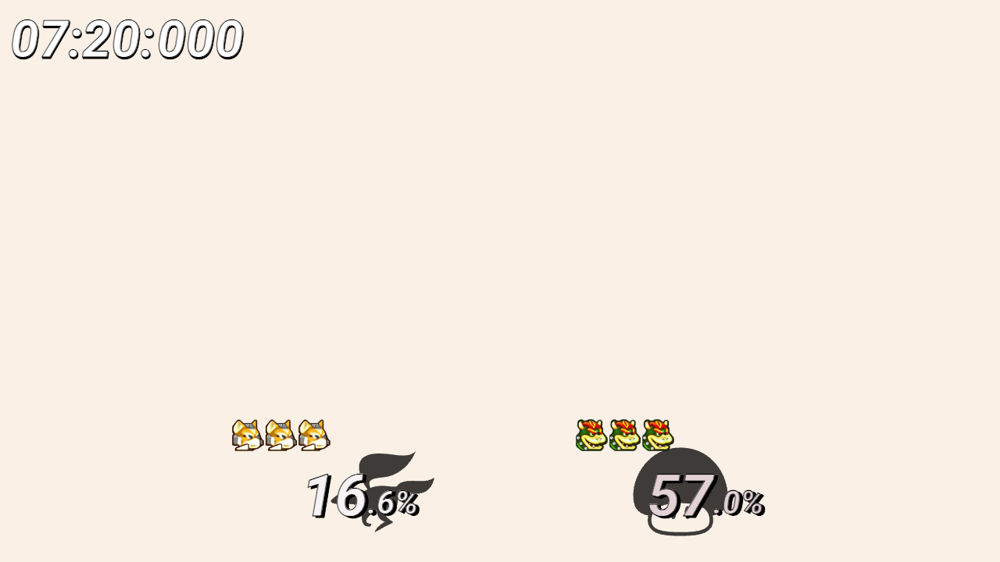
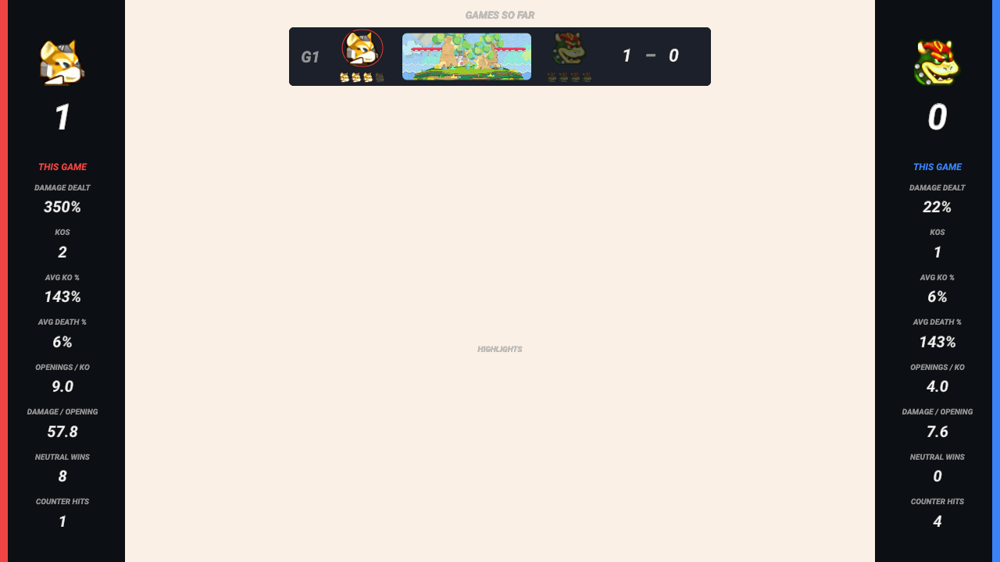

Live overlays
Percent, stocks, rank, win chance and more. Build your own or start from a demo.





What you can build
An overlay is a layer on top of your stream or right on the game window. It reads the game live: percent, stocks, characters, timer, tags, set score, ranks, combos, controller inputs and more.
- A custom HUD in your own design
- Stats around the game: names, score and ranks next to a 4:3 game
- Between games: session, post-game and post-set stats
- Stage striking: which stages are left and whose turn it is
- Doubles: team names, team stocks and all four players